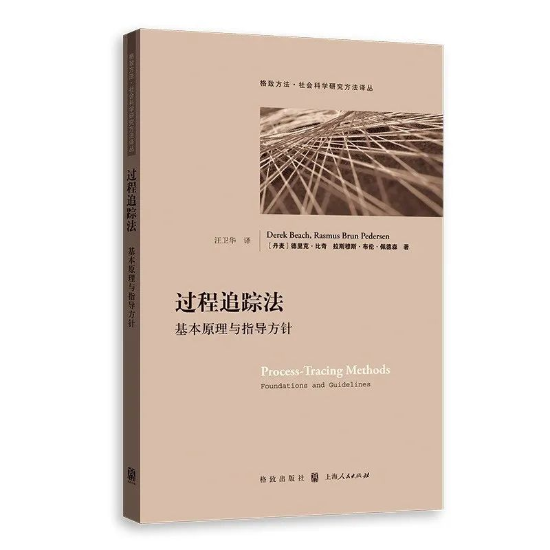

收录于合集
作者简介： 德里克·比奇，丹麦奥胡斯大学政治学教授，主要研究领域为欧洲政治、美国政治、国际组织和社会科学研究方法；拉斯穆斯·布伦·佩德森，丹麦奥胡斯大学政治学副教授，主要研究领域为欧洲政治、定性研究方法、丹麦政治和国际组织。
译者简介： 汪卫华，北京大学国际关系学院副教授、比较政治学专业主任，北京大学陈翰笙世界政治经济研究中心执行主任，主要研究领域为比较政治、中国政治及社会科学研究方法。

荐书简介
过程追踪方法近来在定性社会科学研究中广为流行，它是一种在单一案研究设计中考察因果机制的工具，对于研究中的个案内推断颇有助益。社会科学中的过程追踪研究的是将原因和结果联系起来的因果机制的方法。它使研究者能够就一个原因（或一组原因）如何产生一个结果形成强推断。
本书详细探讨了过程追踪区别于其他个案研究方法的本体论和认识论基础，充分阐述了该方法的逻辑基础和特点。德里克·比奇和拉斯穆斯·布伦·佩德森介绍了过程追踪的精炼定义，将其分成了三种变体——理论检验型过程追踪、理论建构型过程追踪和解释结果型过程追踪，并详细说明了它们的共同点和关键区别，解释了每一种的应用和局限。两位作者阐明了过程追踪的隐含逻辑，包括应当如何理解因果机制、贝叶斯逻辑如何使个案内强推断可行。他们为确定最适合手头研究问题的过程追踪变体提供了指引，并为研究过程中的每个阶段设立了一套基本方针。在剖析过程追踪方法对因果性的机制论和决定论的基础上，本书还探讨调查因果机制的推断逻辑和方法论工具。
推荐语
这类书有其现实需求。作者对诸多问题进行了全盘考量。他们能够用学生理解得了的术语，将技术及其原理和局限解释清楚。
——彼得·霍尔（Peter Hall），哈佛大学
过程追踪是个案内定性研究传统中的基础。比奇和佩德森对这一方法进行了全面介绍，填补了定性研究方法作品中的巨大空白。本书将会广为流传并广受援引。
——柯林·埃尔曼（Colin Elman），雪城大学
目录
致谢
1 社会科学中的过程追踪
1.1 界定过程追踪
1.2 如何区分过程追踪与其他个案研究方法
1.3 本书主题
2 过程追踪三种变体及其运用
2.1 工艺现状——一种方法
2.2 过程追踪法的三种不同运用
2.3 过程追踪的三种变体
2.4 结论：对过程追踪的新理解
3 什么是因果机制？
3.1 社会科学中因果性的本体论
3.2 因果机制——一个机制论定义
3.3 关于因果机制本质的争论
4 与因果机制理论共事
4.1 三种变体共有的挑战
4.2 因果机制的不同类型
4.3 理论检验型过程追踪
4.4 理论建构型过程追踪
4.5 解释结果型过程追踪
5 因果推断与过程追踪法
5.1 过程追踪中作出的推断类型
5.2 过程追踪中可以使用哪种类型的推断逻辑？
5.3 贝叶斯推断逻辑与过程追踪
5.4 在过程追踪法中作因果推断——运用和限制
6 对因果机制的经验检验
6.1 贝叶斯更新
6.2 过程追踪中的证据类型
6.3 检验力度
6.4 因果机制概念化和操作化的扩展示例：研究官僚政治
7 化观察为证据
7.1 如何将观察结果转化为证据
7.2 过程追踪中证据的来源
8 混合方法设计中的个案选择和嵌套过程追踪研究
8.1 理论检验型过程追踪
8.2 理论建构型过程追踪
8.3 解释结果型过程追踪
8.4 混合方法设计中嵌套以理论为中心的过程追踪研究的挑战
8.5 结论
附录 一份过程追踪分析清单
A.1 什么时候可以使用过程追踪？我们应该选择哪种变体？
A.2 理论检验型过程追踪清单
A.3 理论建构型过程追踪清单
A.4 解释结果型过程追踪清单
术语对照表
参考文献
译后记
书摘
1 社会科学中的过程追踪
你知道的，魔术师一旦把自己的戏法说穿，就得不到别人赞赏了；如果我把我的工作方法给你讲得太多，你就会得出这样的结论：我只不过是一个十分平常的人罢了。
——歇洛克·福尔摩斯（A.C. Doyle 2010: 33）
过程追踪研究本质上就是学者试图刨根问底，不仅仅满足于发现自变项（X）和结果（Y）之间的相关性。比如，学者业已发现民主与和平之间在统计学上有很强的相关关系（Oneal, Russett and Berbaum 2004）。然而我们怎样才知道彼此皆为民主政体是两个国家之间保持和平的原因呢？民主如何催生更为和平的国际关系？回答这些问题要求我们揭示彼此皆民主与和平之间的因果关系，去研究将两个概念联系在一起的因果机制。
社会科学中的过程追踪通常被界定为致力于描摹各种因果机制（Bennett 2008a, 2008b；Checkel 2008；George and Bennett 2005）。因果机制可以被定义为“通过某些组成部件之间的相互作用产生某一结果的复杂系统”（Glennan 1996: 52）。过程追踪需要“尝试去识别介于某一自变项（或诸自变项）与依变项*结果之间的因果过程，即因果链条和因果机制”（George and Bennett 2005: 206—207）。
探讨因果机制有助于我们在研究因果关系时更进一步，让我们得以“探察因果性之究竟，搞清楚神隐于各种结构原因与据称为其影响后果之间的中介因素”（Gerring 2007a: 45）。而过程追踪法可以说是唯一能让我们去研究各种因果机制的方法。以过程追踪法研究因果机制使研究者能够对结果得以出现的因果过程作出强有力的个案内推断（within case inferences），使我们能够更新自己对某一理论化的因果机制可靠性的置信度。因此，过程追踪是“一种极为宝贵的方法，理应被每一位研究者纳入百宝囊”（George and Bennett 2005: 224）。
过程追踪法近来在定性社会科学中广为流行，许多博士生和成名学者尝试在他们的研究中运用该方法（例如，Bennett and Elman 2006a, 2006b；Elman 2004；Hall 2008；Jacobs 2004；Khong 1992；Lehtonen 2008；Owen 1994）。不过，尽管过程追踪在经验研究中被广为运用，并且关于过程追踪和因果机制的方法论文献数量激增，但就运用过程追踪如何以及何时才能作出可靠的推断而言，我们尚未拥有一套清晰、连贯的分析框架。我们也缺少一套在实践中运用这些方法的具体指南。过程追踪让我们能够运用深入的个案研究方法提炼有关因果机制的强有力的个案内推断，从而打开因果性的黑匣子，但上述不足却限制了过程追踪充分展现出它应有的潜能。
在本书中，我们试图揭示戏法是怎么表演的。在这么做的同时，我们要让读者们看到过程追踪是一套“寻常的”社会科学方法，和其他众多方法一样，有比较优势，也有比较劣势。它不是万灵丹，但运用得宜时，它能让我们基于深入的单一个案研究就因果机制提出强有力的个案内推断，可以说这样的推断用其他社会科学方法是不可能办到的。
1.1 界定过程追踪
过程追踪法是在单一个案研究设计中考察因果机制的工具。尽管学者一般都同意过程追踪法可以被界定为以追踪描摹因果机制为目标，但现有学术文献无论对过程追踪法的本体论和认识论基础，还是对实践中好的过程追踪应该怎么做，都存在着相当多的混乱看法。一些基本问题，比如要追踪描摹什么样的因果机制、过程追踪个案研究多大程度上可以被嵌套进更宽泛的混合方法研究设计之中，相对而言都还没有得到回答。这样一来，缺少连贯的基础和具体的指南，也就阻碍了这一方法施展其潜能。
这种混乱局面部分地是学术文献中将过程追踪界定为单一研究方法的结果。许多关于过程追踪是什么以及实践中应该怎样运用的晦涩说法可以通过将过程追踪区分为三类社会科学研究变体加以澄清：理论检验、理论建构以及解释结果。这三种类型在不同维度上区分开来，包括它们是以理论为中心还是以个案为中心、所作推断的不同类型、各自如何理解因果机制，以及它们是否及如何能够被嵌套进混合方法设计之中。
理论检验型过程追踪（theory testing process tracing）从现有文献中演绎出理论，然后在给定个案之中检验是否有证据表明假设的因果机制每一部件均在研究个案中出现，从而得以考察有关于“机制是否如预期在个案之中发挥了作用”“机制是否作为一个整体呈现出来”的个案内推断。不过，就此并不能断言这一机制是否是造成结果的唯一原因。
理论建构型过程追踪（theory building process tracing）寻求从经验证据中建构一套可以一般化的理论解释，从某一特殊的个案事实之中推断存在着一种更为一般的因果机制。尽管这种类型的过程追踪对我们增进知识来说在分析上是有益的，但现有文献并没有提供任何按这一思路该如何操作的指南。
最后，解释结果型过程追踪（explaining outcome process tracing）试图为某一特定历史个案中出现的谜之结果给出最低限度的充分解释。在这儿，研究目标并非建构或检验更加一般性的理论，而是就事论事提出一套（最低限度的）充分解释，其研究抱负是以个案为中心而非以理论为中心。这一区别反映了许多定性学者以个案为中心的研究抱负，与诸如采取折中立场进行理论化工作（以个案为阵地和中心）（Sil and Katzenstein 2010）和实用主义研究策略（Friedrichs and Kratochwill 2009）这之类的话题上日渐增多的文献中的主张两相呼应。解释某一个案的结果通常要求将不同机制折中结合，这些机制有些是就事论事的（case specific）或非系统性的（参见第2章和第4章）。
我们在此并非纯粹为分类而分类。相反，通过鉴别三种变体，我们能把我们所做的向我们所说的看齐，这些区分对研究设计有着重要的方法论意涵，而如果我们把过程追踪当成单一方法的话，这些方法论意涵就被遮蔽掉了。
1.2 如何区分过程追踪与其他个案研究方法
综上所述，可以通过作出的推断类型把过程追踪法与大多数其他少量（small n）个案研究方法区分开来。过程追踪试图在单一个案研究中对因果机制的出现/缺失作出个案内推断，而大多数少量个案方法则试图就因果关系进行跨个案推断（cross case inferences）。这些不同的推断雄心要求不同的推断逻辑，从而导致了根本不同的方法论（参见第5章）。
有些个案研究方法也能作个案内推断，过程追踪法最突出的替代品就是乔治和班尼特所称的“一致法”（congruence method）（George and Bennett 2005: Chapter 9）。在一致法中，基于自变项（X）的取值，研究者检验依据理论对结果的预测，是否与个案中的发现相一致，无论调查是依时间变化的还是跨（诸）结果各方面变化的（George and Bennett 2005: 181—204；Büthe 2002）。
一致法通常被用以构造一个历史过程的叙事，检验X和Y在一个经验过程的不同时间点（t0, t1, …, tn）上的预测值（Büthe 2002）。“除了在因果过程的每一步都呈现相关性的信息”，这类叙事个案研究“可以将这些步骤处境化，使整个过程可见，而不是将其分解到各个分析阶段”（Büthe 2002: 486）。例如，坦嫩瓦尔德（Tannenwald 1999）对核禁忌的研究涉及一致个案研究，她调查了被测度为“禁忌言论”的X（反对使用原子武器的规范）或被测度为“物质主义论点”的Z（物质因素）各自可观察到的意涵是否出现于美国政府的决策过程之中。她用了四个使用和不使用核武器的个案历史叙事，发现在三个核武器几近被使用的个案中，禁忌言论的出现（X）和不使用核武器（Y）之间有很强的相关性。
把一致法和过程追踪法区别开来的关键在于明确聚焦于调查因果机制。一致法调查X和Y之间的相关性，而过程追踪调查有助于产生某一结果的某一或各种机制的运作。过程追踪法超越了相关性，试图追踪把X和Y联系起来的理论上的因果机制。
与鲁巴赫（Rubach 2010）等人的观点相反，过程追踪个案研究通常不能以叙事形式呈现。尽管以事件或时序形式呈现的证据，在根据预测的可观察到的影响类型来检验因果机制的某一部件出现时可能是适当的（参见第6章），但其他类型的证据，如模式证据（例如由不同机构生产的文件的数量），则可能在检验该机制的其他部件时才是适当的。因此，过程追踪个案研究通常应作为因果机制每一部件的逐步检验（a stepwise test）加以呈现，理论检验型变体尤其如此。例如，欧文（Owen 1994）对民主和平机制的研究就是作为对其理论化机制每一部件的一步步检验呈现出来的，而不是以该个案中事件的叙事方式写成的（参见第5章）。
1.3 本书主题
当我们想要比用其他社会科学个案研究方法（如跨个案比较法）更好地理解因果关系的本质时，就会使用过程追踪法。然而，现有的关于过程追踪的方法论文献之中一个关键不足是缺乏对该方法或研究设计的逻辑基础的充分阐述，尤其是在过程追踪与其他定性个案研究方法的不同之处方面语焉不详。
本书通过详细探讨过程追踪区别于其他个案研究方法（如一致法或结构化的、聚焦的比较法，关于这两类方法的更多信息参见George and Bennett 2005）的本体论和认识论基础，纠正了这一缺漏。“本体论”指的是我们对社会世界本质的理解——具体地说，在这里就是因果性的本质。“认识论”指关于我们应当怎样最好地研究社会世界中的因果关系的各种论点。我们提出的论点建立在霍尔（Hall 2003: 374）断言研究方法论和本体论需要对齐的基础上：“究其根本，本体论之于方法论至关重要，因为一组特定的方法之于某个给定问题恰当与否，取决于对它们旨在揭示的因果关系的本质的预设。”正如第3章提出的，采纳过程追踪因果性的机制论和决定论本体论，意味着使用完全不同的方法论工具进行经验分析，而不是将对因果性的规律性理解作为理论化的基础。此外，就因果机制作出个案内推断的目标也意味着，与使用诸如一致法等其他少量个案方法相比，我们采用了不同的推断逻辑（参见第5章）。
***** Independent/Dependent variables通常被译为“自变量”“因变量”。考虑到在社会科学尤其是政治学中，大量的“变量”是以“定类”测量层次存在的，从中文语义上讲，还是用“变项”更为准确。而“因变量”的通常译法在当代日常用法中往往会跟“原因”之因混起来，译作“依变项”似乎更贴近英文原词。——译者注
编辑：康张城